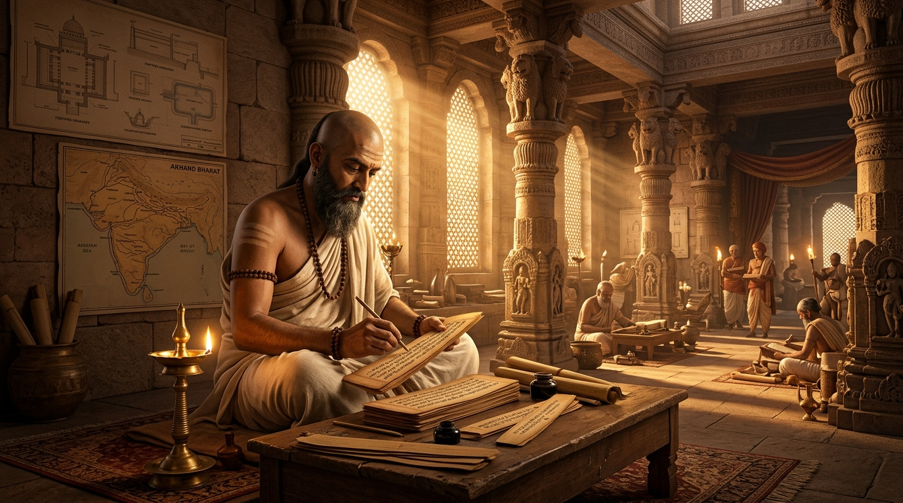
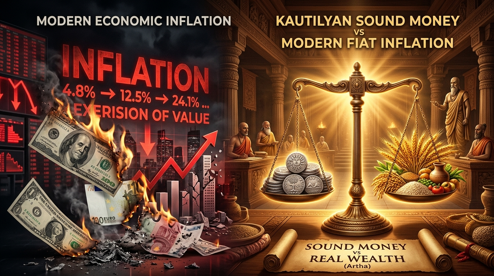
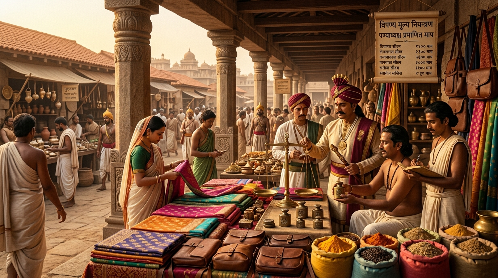

— समकालीन-आर्थिक-सङ्कटानि नापूर्वाणि —
The Economic Problems We Are Struggling With Today Are Not New:
Kautilya's Clever and Practical Rules to Fix Modern Economic Crises
"तस्मान्नित्योत्थितो राजा कुर्यादर्थानुशासनम्।
अर्थस्य मूलमुत्थानम् अनर्थस्य विपर्ययः॥"

Modern Keynesian and Central Banking models deliberately orchestrate 5% to 6% annual inflation under the pretext that rising prices force citizens to spend rather than hold idle cash, thereby keeping the economic cycle moving.
"अनेन सामान्य-जनानां महान् क्लेशः वर्तते। यः अधुना २५,००० अर्जयति, सः पश्चात् ५०,००० अर्जयति चेदपि जीवनं क्लेशमयम्..."
"अकृषतामाच्छिद्यान्येभ्यः प्रयच्छेत्,
ग्रामभृतकवैदेहका वा कृषेयुः।"

In the modern market, prices are completely decoupled from physical production realities. Modern oligopolies manufacture artificial brand prestige to extract predatory super-normal profits.
"किम् सुवर्णेन निर्माणं कुर्वन्ति वा? ना! तदपि सामान्यतया २०० वा ५०० व्ययीकृत्य निर्मितमेव..."
"वैदेहकानां वा संभूय पण्यमवरुन्धताम् अनर्घेण विक्रीणतां वा सहस्रं दण्डः।"
अर्थशास्त्रम् ४.२.१९ (1,000 Pana Anti-Cartel Collusion Fine)Panyadhyaksha (Superintendent of Commerce) strictly enforced that every shopkeeper adhere to verified pricing. Both predatory undercutting and luxury price gouging were punishable by law.
Because large multinational corporations use offshore tax havens and base erosion (BEPS) to pay near-zero corporate taxes, governments balance budgets through massive indirect consumption taxes.
"पक्वं पक्वमिवारामात् फलं राज्यादवाप्नुयात्।
आत्मच्छेदभयादामं वर्जयेत् कोपकारकम्॥"
Kautilya's empire did not rely on foreign borrowing. The state generated robust non-tax revenue through strategic state enterprises:
In modern offices, citizen entitlements and public contracts are choked by institutional bribery and systematic rent-seeking. Bureaucratic bottlenecks are deliberately engineered to demand kickbacks.
"मत्स्या यथान्तःसलिले चरन्तो
ज्ञातुं न शक्याः सलिलं पिबन्तः।
युक्तास्तथा कार्यविधौ नियुक्ता
ज्ञातुं न शक्या धनमाददानाः॥"
Just as fish swimming underwater cannot be seen drinking water, government officials embedded in administrative procedures cannot easily be caught tasting state wealth. This realism guided Kautilya's preventive architecture.
"दिवस-मास-संवत्सर-प्रत्यवेक्षणेन नीवी निर्धार्या।"
अर्थशास्त्रम् २.६.२८ (Daily, Monthly, Yearly Balance Reconciliation)In the modern agricultural supply chain, the primary producer bears all climate and financial risks, yet receives the smallest fraction of retail consumer spending.
"अस्माभिः दत्तं धनं किं कृषकस्य गच्छति वा? न गच्छति! मध्यवर्तिनाम् एव अधिकं गच्छति..."
"ततोऽर्धम् आपदर्थं जानपदानां स्थापयेत्, अर्धम् उपभुञ्जीत।"
अर्थशास्त्रम् २.१५.२१ (Statutory 50% Counter-Cyclical Granary Reserves)Critical national security resources remained under state stewardship to prevent oligarchic capture:
Complete commercial freedom across civilian economic domains:
"बाल-वृद्ध-व्याधित-व्यसन्य-अनाथांश्च राजा बिभृयात्..."
अर्थशास्त्रम् २.१.२६State revenues were mandated by law to nourish orphans, the aged, disabled, and destitute pregnant women, guaranteeing dignity for all.
Reduce regressive indirect consumption taxes (GST/VAT). Adopt Kautilya's Ripe Fruit Doctrine, granting automatic statutory tax holidays to startups and MSMEs.
Deploy Competition Commission algorithmic oversight to audit the 3-Factor Cost of essential goods, enforcing statutory caps against arbitrary brand markups.
Replace delayed post-facto bureaucratic audits with real-time digital balance auditing, enforcing Kautilya's 1/6th whistleblower bounty for recovered stolen public assets.
Empower local Panchayats to manage community irrigation commons (Elinor Ostrom model) with guaranteed state input matching and mandatory collective maintenance.
Mandate statutory 50% physical commodity and grain reserves managed under FIFO inventory protocols to eliminate food insecurity during global supply shocks.
Halt stealth currency debasement. Drive capital velocity by heavily taxing or penalizing idle land and speculative hoarding, channeling funds into real productive industry.
"प्रजासुखे सुखं राज्ञः प्रजानां च हिते हितम्।
नात्मप्रियं हितं राज्ञः प्रजानां तु प्रियं हितम्॥"